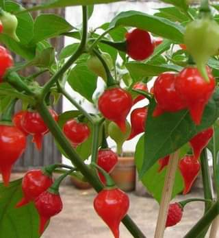
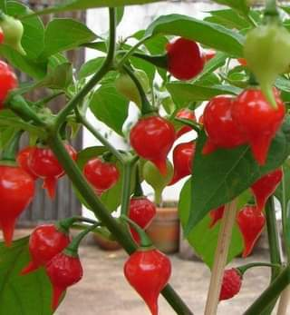

Tambem chamada como a pimenta de bico, ela pertence a mesma espécie das pimentas
(habanero de cheiro, bode), cumari-do-Oará e Murupi. Todas essas pimentas são muito aromáticas
e saborosas, mas o ardir pode ser bem suave, como no biquinho ou muito picante como na habanero.
A Biquinho comecou a ser comercializada no Triângulo Mineiro, no inicio da década de 2000, mas
johe pode ser encontrada em todo o território nacional.
Ela possui vitaminas C, B6 e K1, e é rica em cálcio, ferro, magnésio, fósforo e
sódio, além do betacaroteno. Com essas propriedades, a pimenta-de-cheiro é considera
um bom antioxidante, ajuda o sistema imunológicoajuda a controlar o açúcar no sangue,
a prevenir inflamações e a diminuir dores musculares.
ação rubefaciente. Mas, ela pode causar vermelhidão e a sensação de calor,mas suas propriedades
atuam para diminuir dores locais e provocam o aumento da sensação de conforto sobre onde a pimenta é aplicada.
Coloque a muda de pimenta biquinho em um vaso com terra vegetal e areia de construção grossa,
na proporção de um para um. É fundamental que a terra fique soltinha. Em seguida, misture um
pouco de esterco curtido e cinza de madeira para deixar o solo com mais nutrientes
/
section
 a biquinho pode ajudar no combate de dores no corpo.Pois, promove
a biquinho pode ajudar no combate de dores no corpo.Pois, promove
 
